CASE STUDY 03 / PROFESSIONAL EXPERIENCE
Database-driven
file routing.
A separate file-triggered Logic Apps workflow reads routing and email configuration from a database, then handles relevant TXT and PDF files.
Static diagram

DATABASE CONFIGURATION
Read the rules.
Then route the files.
- A file arriving in the configured input or hot-folder location starts the Logic Apps workflow.
- The workflow reads routing configuration from a database before identifying the TXT and PDF files to process.
- Database-provided locations determine where the files are moved and archived.
- The email recipients are also obtained from the database.
- A success email reports dynamic file counts by format, such as TXT and PDF files moved.
DYNAMIC EMAIL SUMMARY
The success email content includes counts by file type. Any example count shown in a diagram would be illustrative only; this page contains no production volumes, internal paths, database objects or customer identifiers.